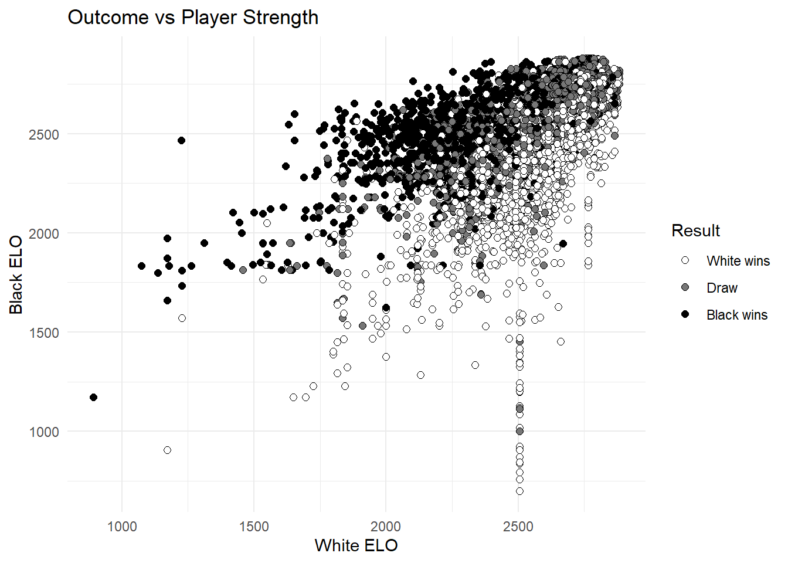

library(tidyverse)
chess_games = read.csv("data/chess_data.csv")
chess_games <- chess_games %>%
mutate(date = as.Date(date, format = "%m/%d/%Y"))Final Project Check-up Memo
Data Visualization (STAT 302-1)
Introduction
Following the previous check up, I have made significant progress in cleaning and wrangling the data, as well as determining how to present the data.
Loading packages and datasets
Cleaning the data
There were a few glaring errors in the data given that were easily manually corrected by editing the .csv itself. For example, there was one instance of a text paragraph replacing a number analysis, which had to be manually removed. The column labels were properly formatted, and some unneeded columns were deleted. Two of the most recently added games did not have results, so again I manually updated the missing values.
Preliminary Graph
chess_games %>%
ggplot(aes(x = white_ELO, y = black_ELO)) +
geom_point(
aes(fill = result),
color = "black",
pch = 21,
size = 2
) +
scale_fill_gradient(
name = "Result",
guide = "legend",
low = "white",
high = "black",
breaks = c(0, 1, 2),
labels = c("White wins",
"Draw",
"Black wins")
) +
labs(
title = "Outcome vs Player Strength",
x = "White ELO",
y = "Black ELO"
) +
theme_minimal()
Progress
After some cleaning, I feel I have a workable data set and am on track for submission. There was a bit of work I had to do make the data workable that I didn’t account for in the initial check up, but overall I feel satisfied with my progress so far.
Plans
My plan is create a Shiny app that allows users to filter the data by date-range, ELO range, specific players, events, results, etc. There will multiple tabs each with different types of graphs for different representation. A scatter plot, similar to the one above, will use color to show the result with ELO ratings as X and Y . A line plot will track a player’s ELO and average centipawn loss over time. A histogram will show the distribution of games by different variables.
Organization
I created a new project, a project folder and a git repository to keep track of version updates.